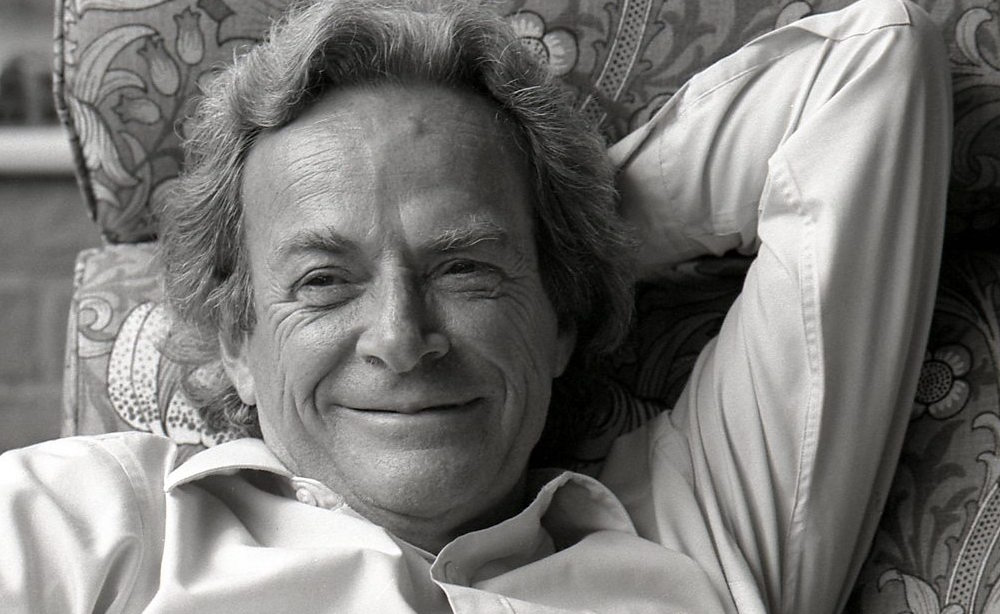

I intend to show new content daily on this landing page: a book recommendation, a song, a biography of a writer or scientist, a quote, a joke... For today, I propose:

Richard Phillips Feynman (1918 — 1988) was one of the most important physicists and educators of all time. Distinguished with the Nobel Prize in 1965 for the theory of quantum electrodynamics, which merges the quantum approach with that of the movement of electromagnetically charged particles, Feynman was gifted with a remarkable ability of presenting incredibly difficult subjects for general audiences, in a very accessible language and form, making use of examples and common analogies to explain the concepts. His working style, influenced from early childhood by his father, was to make examples, experiments and models for himself, which should reflect the notions that he was studying. One of his favourite sayings was “What I cannot create, I cannot understand”, thus reaching to perceive with enough familiarity a concept only after he made it into something of his own.Emblematic for his extremely clear teaching style, using many analogies, almost telling stories at times, there are the three volumes of his lectures on physics, which he taught at Caltech between 1961 and 1963 and which are available online.
At the same time, Feynman was really a remarkable figure, who enjoyed life in all of its forms. He taught himself how to play the bongo drums, he practiced capoeira and wrote books of memoirs, anecdotes and funny situations which he's been through, with his friends. Two warm recommendations are:
Also, there are many video recordings of his conferences and lectures, as well as a few documentaries and official biographies. For example, in 1992, James Gleick wrote the biographical book Genius: The Life and Science of Richard Feynman, which became one of the most appreciated. As a documentary, I recommend The Pleasure of Finding Things Out (1981), fully available online.
Personal note: Richard Feynman was the hero who convinced me to study Physics. His way of making abstract concepts into concrete, familiar images, as well as his relaxed style of presentation and education have always seemed to me the best models to follow. For years in a row, I read passionately all of his writings, I watched all the documentaries and his lectures in awe, both for the scientific content, and for his human side which I appreciate the most. I learned many things watching him and, although Physics is not my career anymore, Feynman's image is still a guiding spirit for me.
In closing, I propose an excerpt of the documentary above, in which Feynman talks about the qualities that a professor should have: